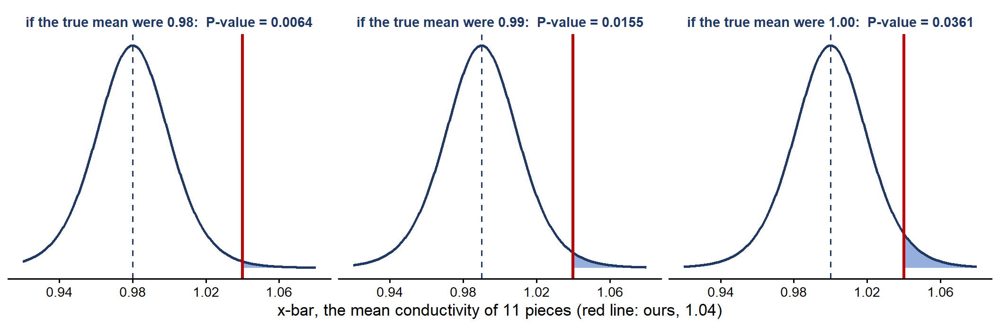

Week 11 Notes
STAT 251 Section 01
Three distributions behind every test
Every test so far has quietly used three different distributions. Most mistakes with tests come from mixing them up, so it is worth laying them side by side before going further.
Take two variables measured on each individual in a sample:
- \(X\), a quantitative variable. For example, \(X\) = the most weight a college football player can bench press, in pounds.
- \(Y\), a categorical variable with two outcomes, recorded as \(Y = 1\) for a “success” and \(Y = 0\) otherwise. For example, \(Y = 1\) if a household has three cell phones.
1. The distribution of the variable. This is how the values of \(X\) (or \(Y\)) are spread across the whole population, one individual at a time.
- \(X\) has a population mean \(\mu\) and a population standard deviation \(\sigma\). Its shape can be anything: normal, skewed, lumpy. When it is normal, we write \[X \sim N(\mu, \sigma) \qquad \text{(normal)}\] read “\(X\) follows a normal distribution with mean \(\mu\) and standard deviation \(\sigma\)”.
- \(Y\) has only two values, so its whole distribution is two probabilities: \[P(Y = 1) = p, \qquad P(Y = 0) = 1 - p\] Recall, this is called a Bernoulli distribution, written \(Y \sim \text{Bernoulli}(p)\).
2. The sampling distribution of the estimate. We estimate \(\mu\) with \(\bar{x}\) and \(p\) with \(\hat{p}\), both computed from a sample of size \(n\). A different sample gives a different \(\bar{x}\) or \(\hat{p}\), and the sampling distribution (Week 8) describes how they vary from sample to sample.
- The sample mean is \[\bar{x} \sim N\left(\mu, \frac{\sigma}{\sqrt{n}}\right) \qquad \text{(normal)}\] exactly if \(X\) is normal, and approximately when \(n \geq 30\) whatever the shape of \(X\) (the Central Limit Theorem).
- The sample proportion is approximately \[\hat{p} \sim N\left(p, \sqrt{\frac{p(1-p)}{n}}\right) \qquad \text{(normal)}\] when \(np \geq 15\) and \(n(1-p) \geq 15\).
3. The distribution of the test statistic, if \(H_0\) is true. A test standardizes the estimate, using the null value in place of the unknown parameter. If \(H_0\) is true, the result has a distribution we know exactly, so we can say how surprising our sample is: \[z_{obs} = \frac{\bar{x} - \mu_0}{\sigma/\sqrt{n}} \sim N(0, 1) \qquad z_{obs} = \frac{\hat{p} - p_0}{\sqrt{p_0(1-p_0)/n}} \sim N(0, 1) \qquad \text{(standard normal)}\] \[t_{obs} = \frac{\bar{x} - \mu_0}{s/\sqrt{n}} \sim t(n - 1) \qquad \text{(Student's } t \text{ with } df = n - 1\text{)}\] The subscript “obs” (observed) marks the test statistic computed from our sample. It keeps it apart from a critical value such as \(Z_{1-\alpha/2}\) (two-sided) or \(Z_{1-\alpha}\) (upper-tailed), which comes from the table and not from the data. For example, \(Z_{1-\alpha} = Z_{0.95} = 1.645\) when \(\alpha = 0.05\).
| Quantitative \(X\): the mean | Categorical \(Y\): the proportion | |
|---|---|---|
| 1. the variable (one individual) |
mean \(\mu\), SD \(\sigma\), any shape; if normal, \(X \sim N(\mu, \sigma)\) (normal) |
\(Y \sim
\text{Bernoulli}(p)\): \(P(Y = 1) = p\), \(P(Y = 0) = 1 - p\) |
| 2. the estimate (one sample of size \(n\)) |
\(\bar{x} \sim N(\mu,
\sigma/\sqrt{n})\) (normal), if \(X\) is normal or \(n \geq 30\) |
\(\hat{p} \sim N\left(p,
\sqrt{p(1-p)/n}\right)\) (normal), if \(np \geq 15\) and \(n(1-p) \geq 15\) |
| 3. the test statistic, if \(H_0\) is true |
\(\sigma\) known: \(z_{obs} = \dfrac{\bar{x} - \mu_0}{\sigma/\sqrt{n}}
\sim N(0, 1)\) (standard normal) \(\sigma\) unknown: \(t_{obs} = \dfrac{\bar{x} - \mu_0}{s/\sqrt{n}} \sim t(n - 1)\) (Student’s \(t\)) |
\(z_{obs} = \dfrac{\hat{p} - p_0}{\sqrt{p_0(1-p_0)/n}} \sim N(0, 1)\) (standard normal) |
Here are the three, side by side, for a quantitative \(X\) (top row) and a two-outcome \(Y\) (bottom row). The estimate and test-statistic panels are drawn as if \(H_0\) is true.
![Six panels in two rows. Top row: first, the distribution of X, a slightly right-skewed curve with its mean mu marked; second, the sampling distribution of the mean, x-bar, a normal curve centred at mu and much narrower than the distribution of X, on the same axis; third, the distribution of the test statistic z_obs, the standard normal curve centred at 0. Bottom row: first, the distribution of Y, Bernoulli with parameter p, two bars, P of Y = 0 equal to 1 minus p and P of Y = 1 equal to p; second, the sampling distribution of the sample proportion, p-hat, a normal curve centred at p; third, the same standard normal curve for z_obs.](lecturemenu11_files/figure-html/unnamed-chunk-2-1.png)
Three things to notice:
- The estimate varies much less than the variable. Panels 1 and 2 of the top row share an axis: one individual’s \(X\) can land far from \(\mu\), but the mean of \(n\) of them stays close. That is the \(\sqrt{n}\) in \(\sigma/\sqrt{n}\).
- The variable does not have to be normal. \(X\) is skewed, and \(Y\) is two bars, nothing like a bell. Their estimates \(\bar{x}\) and \(\hat{p}\) are still close to normal when \(n\) is large (the Central Limit Theorem).
- The last panel is the same in both rows. Standardizing removes the units and the null value, so every \(z_{obs}\) ends on the same standard normal curve, and one \(z\)-table serves them all. A \(t_{obs}\) ends on a \(t\) curve instead, which depends only on \(df\).
The P-value is always an area under the third distribution: the distribution of the test statistic when \(H_0\) is true.
Why the test statistic is standard normal when \(H_0\) is true
Recall the z-score from Week 6. To standardize a value, subtract the mean of its distribution and divide by the standard deviation of its distribution: \[z = \frac{\text{value} - \text{mean}}{\text{SD}}\] If the value comes from a normal distribution, its z-score follows \(N(0, 1)\) (standard normal). Every normal curve turns into the same standard normal curve once we measure in SDs from its centre.
Now look at the test statistic for a mean, one piece at a time.
- The value we standardize is \(\bar{x}\). Its distribution is \(\bar{x} \sim N(\mu, \sigma/\sqrt{n})\).
- If \(H_0\) is true, then \(\mu = \mu_0\), so \(\bar{x} \sim N(\mu_0, \sigma/\sqrt{n})\). The mean of its distribution is \(\mu_0\), and its SD is \(\sigma/\sqrt{n}\).
- So the test statistic is exactly the z-score of \(\bar{x}\): \[z_{obs} = \frac{\bar{x} - \mu_0}{\sigma/\sqrt{n}} = \frac{\text{value} - \text{its mean if } H_0 \text{ is true}}{\text{its SD}} \sim N(0, 1) \qquad \text{(standard normal)}\]
The proportion works the same way. If \(H_0\) is true, \(p = p_0\), so \(\hat{p} \sim N\left(p_0, \sqrt{p_0(1-p_0)/n}\right)\), and \[z_{obs} = \frac{\hat{p} - p_0}{\sqrt{p_0(1-p_0)/n}} \sim N(0, 1) \qquad \text{(standard normal)}\] is the z-score of \(\hat{p}\). This is why the standard error in a test uses \(p_0\) and not \(\hat{p}\): if \(H_0\) is true, \(\sqrt{p_0(1-p_0)/n}\) is the SD of \(\hat{p}\).
A number to hold on to: the bench press. From OpenStax Introductory Statistics 2e, Section 9.5, Example 9.15.
A college football coach records the mean weight that his players can bench press as 275 pounds, with a standard deviation of \(\sigma = 55\) pounds. Three of the players think the mean is more than that. They ask 30 of their teammates for their estimated maximum bench press. The answers range from 205 to 385 pounds; the weights, with the number of players giving each in parentheses, are 205 (3), 215 (3), 225 (1), 241 (2), 252 (2), 265 (2), 275 (2), 313 (2), 316 (5), 338 (2), 341 (1), 345 (2), 368 (2), 385 (1). Using a 2.5% significance level, test whether the mean bench press is more than 275 pounds.
The hypotheses are \(H_0: \mu = 275\) and \(H_A: \mu > 275\), and the 30 weights add up to 8,585 pounds, so \(\bar{x} = 8{,}585/30 \approx 286.17\) pounds.
- If \(H_0\) is true, the mean of 30 players follows \[\bar{x} \sim N\left(275, \frac{55}{\sqrt{30}}\right) = N(275, 10.04) \qquad \text{(normal)}\]
- The players’ mean, \(\bar{x} = 286.17\), sits this many SDs above the centre of that curve: \[\frac{286.17 - 275}{10.04} \approx 1.11\]
- That z-score is the test statistic: \(z_{obs} = 1.11\), and if \(H_0\) is true, \(z_{obs} \sim N(0, 1)\) (standard normal).
To finish the test, the P-value is \(P(Z \geq 1.11 \mid H_0 \text{ true}) = 1 - 0.8665 = 0.1335\) (the book’s calculator, without rounding \(z_{obs}\), gives 0.1331). Since \(0.1335 \geq 0.025\), do not reject \(H_0\): at the 2.5% level, the data are not convincing evidence that the mean bench press is more than 275 pounds.
What if \(H_0\) is false? Then the true mean \(\mu\) is not \(\mu_0\), and subtracting \(\mu_0\) subtracts the wrong centre. \(z_{obs}\) is still normal with SD 1, but its centre moves to \((\mu - \mu_0)/(\sigma/\sqrt{n})\), away from 0. That is why a \(z_{obs}\) far from 0 is evidence against \(H_0\): it is the kind of value we expect when the curve has shifted. (This shifted curve comes back in the section on power.)
Why \(t_{obs}\) is not a z-score. With \(\sigma\) unknown, we divide by \(s/\sqrt{n}\) instead. But \(s\) is an estimate that changes from sample to sample, so we are not dividing by the true SD of \(\bar{x}\). That extra uncertainty spreads the statistic out, and if \(H_0\) is true it follows \[t_{obs} = \frac{\bar{x} - \mu_0}{s/\sqrt{n}} \sim t(n - 1) \qquad \text{(Student's } t \text{ with } df = n - 1\text{)}\] which has heavier tails than \(N(0, 1)\) and gets closer to it as \(n\) grows.
Composite hypotheses
So far every null hypothesis has named a single value of the parameter: \(H_0: \mu = 275\), \(H_0: p = 0.5\). A hypothesis that completely specifies the parameter like this is called a simple hypothesis.
Often, though, the “nothing interesting” story does not pin the parameter down to one value. If the claim is that a glass conducts electricity better than 1 (the glass example below), then a mean of exactly 1 is not the only way for the claim to be wrong: 0.99, 0.95 or 0.80 would be just as disappointing. The null has to include all of them, \(H_0: \mu \leq 1\). A hypothesis that allows a whole range of values, because the value of the parameter is not completely specified, is called a composite hypothesis.
| If \(H_A\) is | the simple null is | the composite null is |
|---|---|---|
| \(\theta > \theta_0\) (upper-tailed) | \(H_0: \theta = \theta_0\) | \(H_0: \theta \leq \theta_0\) |
| \(\theta < \theta_0\) (lower-tailed) | \(H_0: \theta = \theta_0\) | \(H_0: \theta \geq \theta_0\) |
| \(\theta \neq \theta_0\) (two-sided) | \(H_0: \theta = \theta_0\) | (none) |
Here \(\theta\) stands for whichever parameter we are testing, \(\mu\) or \(p\). Two rules follow from this (summarized in OpenStax Table 9.1):
- \(H_0\) always contains the equals sign (\(=\), \(\leq\) or \(\geq\)). \(H_A\) never does (\(\neq\), \(>\) or \(<\)).
- Together, \(H_0\) and \(H_A\) cover every possible value of the parameter. With \(H_A: \mu > 1\), the composite null \(H_0: \mu \leq 1\) is “everything else”.
When is a composite null the right one?
A composite null is the honest way to write a one-sided claim, where the “nothing interesting” story is a whole range of values, not one point. Listen for the words:
- “at least”, “no less than” \(\rightarrow\) \(H_0\) uses \(\geq\);
- “at most”, “no more than” \(\rightarrow\) \(H_0\) uses \(\leq\).
Some examples (from OpenStax Section 9.1 and Section 9.2):
For each one, name the parameter in words, then write \(H_0\) and \(H_A\). (The book gives each claim in one sentence; the setup around it is ours, so there is a story to test.)
Voter turnout (Example 9.1). A county election official reports that no more than 30% of the registered voters in Santa Clara County voted in the primary election. A local newspaper suspects turnout was higher, and surveys a random sample of registered voters.
- Parameter: \(p\) = the proportion of all registered voters in the county who voted in the primary.
- Hypotheses: the official’s figure, “30% or less”, is the null: \(H_0: p \leq 0.30\). The newspaper’s suspicion is the alternative: \(H_A: p > 0.30\). Composite, upper-tailed, tested at \(p_0 = 0.30\).
Time to graduate (Example 9.3). College students are often told a degree takes five years, on average. An advising office believes its students finish faster, and records how long a random sample of recent graduates took to graduate.
- Parameter: \(\mu\) = the mean time to graduate for all of the college’s students.
- Hypotheses: the office’s claim, “less than 5 years”, is the alternative, \(H_A: \mu < 5\). Taking exactly 5 years or longer are both “not less than 5”, so \(H_0: \mu \geq 5\). Composite, lower-tailed, tested at \(\mu_0 = 5\).
A cure-rate claim (Example 9.8). A drug company advertises that its experimental drug cures at least 75% of men with prostate cancer. An independent research group suspects the true cure rate is lower, and follows a random sample of patients who took the drug.
- Parameter: \(p\) = the proportion of all men with prostate cancer who are cured by the drug.
- Hypotheses: the company’s claim, “75% or more”, is the null: \(H_0: p \geq 0.75\). The research group’s suspicion is the alternative: \(H_A: p < 0.75\). Composite, lower-tailed, tested at \(p_0 = 0.75\).
A two-sided test never has a composite null: if \(H_A\) is \(\theta \neq \theta_0\), the only value left for \(H_0\) is \(\theta = \theta_0\).
Example: the conductivity of glass (a composite null)
From OpenStax Introductory Statistics 2e, Section 9.5, Example 9.20.
The National Institute of Standards and Technology provides exact data on conductivity properties of materials. Following are conductivity measurements for 11 randomly selected pieces of a particular type of glass:
1.11, 1.07, 1.11, 1.07, 1.12, 1.08, 0.98, 0.98, 1.02, 0.95, 0.95
Is there convincing evidence that the average conductivity of this type of glass is greater than one? Use a significance level of 0.05. Assume the population is normal.
Only the data are given, so \(\sigma\) is unknown and this is a \(t\)-test.
Question: At \(\alpha = 0.05\), is the mean conductivity of this glass greater than 1?
- Assumptions. A random sample of 11 pieces. \(n\) is small, but the population is normal, so the test works. \(\sigma\) is unknown, so we use a \(t\)-test.
- Hypotheses. \(\mu\) = the mean conductivity of all glass of this type. The claim “greater than 1” is the alternative, \(H_A: \mu > 1\), and the null is everything else, a composite null: \(H_0: \mu \leq 1\). The test is upper-tailed, and it is done at the boundary, \(\mu_0 = 1\) (the next section explains why).
- Test statistic. From the data, \(\bar{x} = 1.04\) and \(s = 0.0659\). \[SE = \frac{s}{\sqrt{n}} = \frac{0.0659}{\sqrt{11}} \approx 0.0199\] \[t_{obs} = \frac{\bar{x} - \mu_0}{SE} = \frac{1.04 - 1}{0.0199} \approx 2.01, \qquad df = 11 - 1 = 10\]
- P-value. In row 10 of the \(t\)-table, \(1.812 < 2.01 < 2.228\). Those columns have upper-tail areas 0.05 and 0.025, so \[0.025 < P(T \geq 2.01 \mid \mu = 1) < 0.05\] Software gives 0.036.
- Decision. The P-value is below \(\alpha = 0.05\): reject \(H_0\). The data are convincing evidence that the mean conductivity of this glass is greater than 1.
How do we test a composite null?
There is a catch. To compute a test statistic we need one null value, but \(H_0: \mu \leq 1\) has infinitely many: 1, 0.99, 0.98, and so on. Which one goes into the formula?
Answer: the boundary value, \(\mu_0 = 1\). The test statistic and P-value are computed exactly as if the null were \(H_0: \mu = 1\), as in the glass example. Here is why. The glass data have \(\bar{x} = 1.04\). Look at the P-value for three values that are all inside \(H_0: \mu \leq 1\):
| if the true mean were | \(t_{obs}\) | P-value \(P(T \geq t_{obs})\) |
|---|---|---|
| \(\mu = 0.98\) | \((1.04 - 0.98)/0.0199 = 3.02\) | 0.0064 |
| \(\mu = 0.99\) | \((1.04 - 0.99)/0.0199 = 2.51\) | 0.0155 |
| \(\mu = 1.00\) (the boundary) | \((1.04 - 1.00)/0.0199 = 2.01\) | 0.0361 |

The farther the true mean is below 1, the less likely a sample mean as high as 1.04 becomes, so the P-value shrinks. The largest P-value in \(H_0\) is at the boundary, \(\mu = 1\). So:
- If we reject at the boundary (P-value \(< \alpha\) there), the P-value is even smaller for every other value in \(H_0\), so we reject all of \(H_0\) at once.
- The boundary is the hardest case to reject, so testing there is the cautious choice. It also means the chance of wrongly rejecting is at most \(\alpha\), whichever value in \(H_0\) is the truth.
That is also why many researchers write \(H_0: \mu = 1\) even when they mean \(H_0: \mu \leq 1\): the calculation and the decision are identical. The composite version says more honestly what we would conclude if we do not reject: “the mean could be 1 or less”.
Example: the baker’s bread (a composite null)
From OpenStax Introductory Statistics 2e, Section 9.4, Example 9.9.
Suppose a baker claims that his bread height is more than 15 cm, on average. Several of his customers do not believe him. To persuade his customers that he is right, the baker decides to do a hypothesis test. He bakes 10 loaves of bread. The mean height of the sample loaves is 17 cm. The baker knows from baking hundreds of loaves of bread that the standard deviation for the height is \(\sigma = 0.5\) cm, and the distribution of heights is normal.
The book gives no significance level, so we use the usual \(\alpha = 0.05\).
Question: At \(\alpha = 0.05\), do the data back up the baker’s claim?
- Assumptions. We treat the 10 loaves as a random sample of his bread. The heights are normal, so \(n = 10\) is enough. \(\sigma = 0.5\) is known, so we use a \(z\)-test.
- Hypotheses. \(\mu\) = the mean height of all of the baker’s loaves. The claim “more than 15 cm” is the alternative, \(H_A: \mu > 15\). The customers’ view is everything else, “15 cm or less”, so the null is composite: \(H_0: \mu \leq 15\). The test is upper-tailed, done at the boundary \(\mu_0 = 15\).
- Test statistic. \[SE = \frac{\sigma}{\sqrt{n}} = \frac{0.5}{\sqrt{10}} \approx 0.1581\] \[z_{obs} = \frac{\bar{x} - \mu_0}{SE} = \frac{17 - 15}{0.1581} \approx 12.65\] The sample mean is more than 12 standard errors above 15 cm.
- P-value. \(P(Z \geq 12.65 \mid \mu = 15)\) is far off the end of the \(z\)-table: essentially 0. And that is the largest P-value for any value in \(H_0\); if the true mean were below 15, a sample mean of 17 would be even less likely.
- Decision. P-value \(\approx 0 < 0.05\): reject \(H_0\). The data are convincing evidence that the baker’s loaves average more than 15 cm.
Try it out
From OpenStax Introductory Statistics 2e, Section 9.4, Try It 9.9.
A normal distribution has a standard deviation of 1. We want to verify a claim that the mean is greater than 12. A sample of 36 is taken with a sample mean of 12.5. The hypotheses are \(H_0: \mu \leq 12\) and \(H_A: \mu > 12\), and the P-value is 0.0013. Draw a graph that shows the P-value.
Check the book’s P-value by running the test yourself, and decide at \(\alpha = 0.05\) (the book gives no \(\alpha\)).
Answer: \(H_0: \mu \leq 12\) and \(H_A: \mu > 12\), tested at the boundary \(\mu_0 = 12\). \(SE = 1/\sqrt{36} = 1/6 \approx 0.1667\), so \(z_{obs} = (12.5 - 12)/(1/6) = 3.00\). The P-value is \(P(Z \geq 3.00 \mid \mu = 12) = 1 - 0.9987 = 0.0013 < 0.05\): reject \(H_0\). The mean is greater than 12.
Types of errors
A test ends in a decision, reject \(H_0\) or do not reject it, and it makes that decision without ever learning the truth. So there are four ways it can turn out (OpenStax Table 9.2):
| \(H_0\) is actually true | \(H_0\) is actually false | |
|---|---|---|
| Do not reject \(H_0\) | correct |
Type II error probability \(\beta\) |
| Reject \(H_0\) |
Type I error probability \(\alpha\) |
correct probability \(1 - \beta\), the power |
- A Type I error is rejecting \(H_0\) when it is true: a false alarm. Its probability is the significance level, \[\alpha = P(\text{Type I error}) = P(\text{reject } H_0 \mid H_0 \text{ true})\] We choose \(\alpha\) before collecting the data, so we decide in advance how often we are willing to raise a false alarm.
- A Type II error is not rejecting \(H_0\) when it is false: a missed effect. Its probability is \[\beta = P(\text{Type II error}) = P(\text{do not reject } H_0 \mid H_0 \text{ false})\]
Back to the courtroom from the Week 10 notes, where \(H_0\) is “the defendant is innocent”. A Type I error convicts an innocent person. A Type II error lets a guilty person go free. The legal system sets a high bar, “beyond reasonable doubt”, because it considers the first error worse; the price is more of the second.
Which error is worse depends on the situation. In each example below, write \(H_0\) down first; the errors follow from it.
Example: errors in context
From OpenStax Introductory Statistics 2e, Section 9.2, Examples 9.5, 9.7 and 9.8.
Genetic Labs (Example 9.7)
A company called Genetic Labs claims to be able to increase the likelihood that a pregnancy will result in a male being born. Statisticians want to test the claim. Suppose that the null hypothesis, \(H_0\), is: Genetic Labs has no effect on sex outcome. Describe the Type I and Type II errors, and say which has the greater consequence.
- Type I error: we conclude that Genetic Labs does influence the sex outcome, when in fact it has no effect. Its probability is \(\alpha\).
- Type II error: we conclude that Genetic Labs does not influence the sex outcome of a pregnancy when, in fact, it does. Its probability is \(\beta\).
- The Type I error has the greater consequence: people would pay for Genetic Labs’ product in the hope of having a boy, when it does nothing. Here we want \(\alpha\) small.
A cancer drug (Example 9.8, a composite null)
A certain experimental drug claims a cure rate of at least 75% for males with prostate cancer. Describe both the Type I and Type II errors in context. Which error is the more serious?
The claim “at least 75%” is the null, a composite one: \(H_0: p \geq 0.75\), and a skeptic tests it against \(H_A: p < 0.75\).
- Type I error: a cancer patient believes the cure rate for the drug is less than 75% when it actually is at least 75%. He may turn down a drug that works.
- Type II error: a cancer patient believes the experimental drug has at least a 75% cure rate when it has a cure rate that is less than 75%. He relies on a drug that works less well than claimed.
- The Type II error is more serious: a patient and doctor who believe the drug works at least 75% of the time will likely choose it as the treatment.
Practice: cell phone owners
From OpenStax Introductory Statistics 2e, Section 9.5, Try It 9.18.
Marketers believe that 92% of adults in the United States own a cell phone. A cell phone manufacturer believes that number is actually lower. 200 American adults are surveyed, of which 174 report having cell phones. Use a 5% level of significance. State the null and alternative hypotheses, find the P-value, state your conclusion, and identify the Type I and Type II errors.
The book leaves this one as an exercise; the solution below is ours.
- Assumptions. A random sample of adults: \(np_0 = 200(0.92) = 184 \geq 15\) and \(n(1-p_0) = 200(0.08) = 16 \geq 15\).
- Hypotheses. \(p\) = the proportion of all U.S. adults who own a cell phone. The marketers’ figure is “92% or more”, so \(H_0: p \geq 0.92\) (composite), and the manufacturer’s suspicion is \(H_A: p < 0.92\): lower-tailed, tested at the boundary \(p_0 = 0.92\).
- Test statistic. \(\hat{p} = 174/200 = 0.87\). \[SE = \sqrt{\frac{0.92 \times 0.08}{200}} \approx 0.0192, \qquad z_{obs} = \frac{0.87 - 0.92}{0.0192} \approx -2.60\]
- P-value. \(P(Z \leq -2.60 \mid p = 0.92) = 0.0047\).
- Decision. \(0.0047 < 0.05\): reject \(H_0\). The data are convincing evidence that fewer than 92% of U.S. adults own a cell phone.
The errors. A Type I error would be concluding that fewer than 92% own a cell phone when really at least 92% do. A Type II error would be concluding that the 92% figure could be right when really fewer own one. Since we rejected \(H_0\), the only error we could have made here is a Type I error.
Statistical power
The power of a test is its chance of catching an effect that is really there: \[\text{Power} = P(\text{reject } H_0 \mid H_0 \text{ false}) = 1 - \beta\]
A test with low power can easily miss a real effect and end with “do not reject”, which is one more reason that “do not reject” never means “\(H_0\) is true”. We want power close to 1.
Power has a catch: “\(H_0\) is false” is not one situation. It depends on how false. A test finds a big effect more easily than a small one, so a power calculation always starts by assuming a particular true value of the parameter.
Example: how often would we catch the goggles working?
Return to Jeffrey and his goggles from Lecture 24, from OpenStax Introductory Statistics 2e, Section 9.5, Example 9.14:
Jeffrey, as an eight-year old, established a mean time of 16.43 seconds for swimming the 25-yard freestyle, with a standard deviation of \(\sigma = 0.8\) seconds. His dad, Frank, thought that Jeffrey could swim the 25-yard freestyle faster using goggles. Frank bought Jeffrey a new pair of expensive goggles and timed Jeffrey for 15 25-yard freestyle swims. For the 15 swims, Jeffrey’s mean time was 16 seconds. Frank thought that the goggles helped Jeffrey to swim faster than the 16.43 seconds. Conduct a hypothesis test using a preset \(\alpha = 0.05\). Assume that the swim times for the 25-yard freestyle are normal.
Frank’s test is \(H_0: \mu = 16.43\) against \(H_A: \mu < 16.43\) at \(\alpha = 0.05\), a lower-tailed \(z\)-test (Week 10 works it: \(z_{obs} = -2.08\), reject \(H_0\)). Power asks a different question, one Frank could answer before timing a single swim.
Suppose the goggles really do help, and Jeffrey’s true mean in them is 16.0 seconds. (This value is our assumption; the book does not give one.) Before Frank collects any data, what is the chance his test will reject \(H_0\)?
- Find the cutoff. A lower-tailed test rejects when \(z_{obs} \leq Z_{\alpha}\), the lower-tail critical value. For \(\alpha = 0.05\), \(Z_{0.05} = -1.645\). In seconds, with \(SE = 0.8/\sqrt{15} \approx 0.2066\), that is a sample mean of \[\bar{x} \leq 16.43 - 1.645 \times 0.2066 \approx 16.09 \text{ seconds}\] The cutoff comes from \(H_0\) alone. If the true mean were 16.43, a sample mean this low would happen only 5% of the time; that is \(\alpha\).
- Switch to the truth. If the true mean is 16.0, the sample mean has a normal distribution centred at 16.0, with the same \(SE\). The power is the chance that it lands below the cutoff: \[\text{Power} = P(\bar{x} \leq 16.09 \mid \mu = 16.0) = P\left(Z \leq \frac{16.09 - 16.0}{0.2066}\right) = P(Z \leq 0.44) = 0.67\]
- Interpret. Even if the goggles really cut Jeffrey’s mean to 16.0 seconds, a test with 15 swims catches it only about 67% of the time. The other \(\beta \approx 0.33\) of the time, Frank’s test misses it: a Type II error.
![Two bell curves for Jeffrey's mean swim time with goggles, each with standard error 0.21 seconds. The right curve, labelled H0 true, is centred at 16.43 seconds; the left curve, labelled the truth we assumed, is centred at 16.0 seconds. A vertical line at the cutoff, 16.09 seconds, splits them: the test rejects H0 for sample means to the left of it. Under the H0 curve, the small area left of the cutoff is shaded red and labelled alpha = 0.05. Under the true curve, the area left of the cutoff is shaded green and labelled power = 0.67, and the area right of the cutoff is shaded grey and labelled beta = 0.33.](lecturemenu11_files/figure-html/unnamed-chunk-7-1.png)
Read the picture from the cutoff line. Everything to its left is “reject \(H_0\)”. Under the \(H_0\) curve, that area is \(\alpha\), the false alarms. Under the true curve, it is the power. What is left of the true curve, to the right of the line, is \(\beta\), the misses.
What raises the power?
Each change below starts from the goggles test (\(n = 15\), \(\alpha = 0.05\), true mean 16.0 seconds) and changes one thing:
| Change | Power |
|---|---|
| none (the example above) | 0.67 |
| more swims: \(n = 30\) | 0.90 |
| more swims: \(n = 60\) | 0.99 |
| smaller \(\alpha = 0.01\) | 0.40 |
| larger \(\alpha = 0.10\) | 0.79 |
| smaller effect: true mean 16.2 s | 0.30 |
| bigger effect: true mean 15.8 s | 0.92 |
- A bigger sample is the usual fix. More data shrinks \(SE = \sigma/\sqrt{n}\), so the two curves overlap less. With 30 swims, \(SE \approx 0.1461\), the cutoff moves to \(16.43 - 1.645(0.1461) \approx 16.19\), and the power is \(P(Z \leq (16.19 - 16)/0.1461) = P(Z \leq 1.30) = 0.90\).
- A larger \(\alpha\) moves the cutoff toward the alternative and raises the power, but only by allowing more Type I errors. For a fixed sample size, \(\alpha\) and \(\beta\) pull against each other: making one smaller makes the other larger.
- A bigger true effect is easier to detect. We cannot control it, but it matters when planning: a study meant to find a small effect needs a large sample.
- Less variability (a smaller \(\sigma\)) works like a bigger sample, since it also shrinks \(SE\).
In practice, when the power is too low, statisticians usually increase the sample size while keeping \(\alpha\) the same.
Try it out
- (OpenStax Chapter 9 Practice, Section 9.2, Exercise 17.) The power of a test is 0.981. What is the probability of a Type II error? Answer: \(\beta = 1 - 0.981 = 0.019\).
- (OpenStax Chapter 9 Practice, Section 9.2, Exercise 19.) A microbiologist is testing a water sample for E. coli. Suppose the null hypothesis, \(H_0\), is: the sample does not contain E. coli. The probability that the sample does not contain E. coli, but the microbiologist thinks it does, is 0.012. The probability that the sample does contain E. coli, but the microbiologist thinks it does not, is 0.002. What is the power of this test? Answer: the first probability is \(\alpha = 0.012\) (a false alarm) and the second is \(\beta = 0.002\) (a miss). Power \(= 1 - \beta = 0.998\).
- (OpenStax Section 9.2, Try It 9.6.) Suppose the null hypothesis, \(H_0\), is: a patient is not sick. Which type of error has the greater consequence, Type I or Type II? Answer: a Type II error, deciding the patient is not sick when they are. A sick patient goes untreated.
Sources
- All examples are from OpenStax Introductory Statistics 2e, Chapter 9: the bench press (Example 9.15), glass conductivity (Example 9.20), the baker’s bread (Example 9.9 and Try It 9.9), the composite hypotheses (Table 9.1 and Examples 9.1, 9.3 and 9.8), the errors (Table 9.2, Examples 9.5, 9.7 and 9.8, Try It 9.6), cell phone owners (Try It 9.18), and the goggles (Example 9.14) and Exercises 17 and 19.
- The goggles’ true mean of 16.0 seconds in the power example is an assumption for illustration.
- Textbook: OpenStax Introductory Statistics 2e, Sections 9.1–9.5.